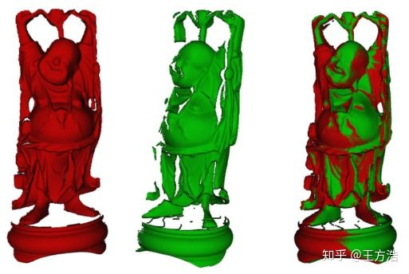

Dig into Apollo - Map  ¶
¶
事者，生于虑，成于务，失于傲。
Table of Contents¶
Map模块简介
Map目录结构
地图数据结构
地图信息头
人行横道
路口
车道
停止信号
交通信号标志
让行
重叠区域
禁止停车
道路信息
停车区域
行人道路
opendriver地图解析
tools
高精度地图API
如何制作高精度地图
采集
加工
转换
Reference
Map模块简介¶
其实我们只需要知道map模块的主要功能是“加载openstreet格式的地图，并且提供一系列的API给其他模块使用”。然后再根据具体的场景来了解地图各个部分的作用，就算是对map模块比较了解了。
Map目录结构¶
本章主要介绍下apollo代码的map模块，map的代码目录结构如下:
├── data // 生成好的地图
│ └── demo
├── hdmap // 高精度地图
│ ├── adapter // 从xml文件读取地图(openstreet保存格式为xml)
│ │ └── xml_parser
│ └── test-data
├── pnc_map // 给规划控制模块用的地图
│ └── testdata
├── proto // 地图各元素的消息格式(人行横道，车道线等)
├── relative_map // 相对地图
│ ├── common
│ ├── conf
│ ├── dag
│ ├── launch
│ ├── proto
│ ├── testdata
│ │ └── multi_lane_map
│ └── tools
├── testdata // 测试数据？
│ └── navigation_dummy
└── tools // 工具
apollo的高精度地图采用了opendrive格式，opendrive是一个统一的地图标准，这样保证了地图的通用性。其中map模块主要提供的功能是读取高精度地图，并且转换成apollo程序中的Map对象。直白一点就是说把xml格式的opendrive高精度地图，读取为程序能够识别的格式。
map模块没有实现的功能是高精度地图的制作，简略的制图过程将在下面章节介绍。
地图数据结构¶
由于openstreet格式是一个标准，可以它的参考官方网站。下面主要介绍下apollo是如何读取xml地图，并且使用的。
地图的读取在adapter中，其中xml_parser目录提供解析xml的能力。而”opendrive_adapter.cc”则实现了地图的加载，转换为程序中的Map对象。然后地图在”hdmap_impl.cc”中提供一系列api接口给其他模块使用。
下面先介绍下地图消息格式，主要在proto目录。
“map.proto” 分为地图头部信息和结构体，头部信息主要介绍了地图的基本信息“版本，时间，投影方法，地图大小，厂家等”。结构体主要是道路的不同组成部分，包括“人行横道，路口区域，车道，停车观察，信号灯，让路标志，重叠区域，禁止停车，减速带，道路，停车区域，路边的小路，或者行人走的路”。
地图信息头¶
首先是地图的基本信息
message Header {
optional bytes version = 1; //地图版本
optional bytes date = 2; //地图时间
optional Projection projection = 3; //投影方法
optional bytes district = 4; //区
optional bytes generation = 5; //
optional bytes rev_major = 6; //
optional bytes rev_minor = 7; //
optional double left = 8; //左
optional double top = 9; //上
optional double right = 10; //右
optional double bottom = 11; //底
optional bytes vendor = 12; //供应商
}
下面是地图的道路信息，其中有2个标志(StopSign，YieldSign)是美国才有的，后来查看了下知乎发现对应到国内是(停，让)，具体的含义都是一样，停车的意思是到路口先停止，看下有没有车，然后再开始启动，让车就是先让行，比如交汇路口，理应让直行的车辆先通过，然后再汇入道路。参考
下面在介绍下overlap，overlap在注释里的解释是“任何一对在地图上重合的东西，包括（车道，路口，人行横道）”，比如路口的人行横道和道路是重叠的，还有一些交通标志和道路也是重叠的，这是创造的一个逻辑概念。（不知道这样理解是否正确）
message Map {
optional Header header = 1; //上面所说的地图基本信息
repeated Crosswalk crosswalk = 2; //人行横道
repeated Junction junction = 3; //交叉路口
repeated Lane lane = 4; //车道
repeated StopSign stop_sign = 5; //停车标志
repeated Signal signal = 6; //信号灯
repeated YieldSign yield = 7; //让车标志
repeated Overlap overlap = 8; //重叠区域
repeated ClearArea clear_area = 9; //禁止停车区域
repeated SpeedBump speed_bump = 10; //减速带
repeated Road road = 11; //道路
repeated ParkingSpace parking_space = 12; //停车区域
repeated Sidewalk sidewalk = 13; //路边的小路，或者行人走的路，现在的版本已经去掉？但是其他模块有些还有sidewalk
}
人行横道¶
map_crosswalk.proto 人行横道(google图片搜索出了彩虹人行横道和三维人行横道，就问深度学习该怎么办？)
message Crosswalk {
optional Id id = 1; //编号
optional Polygon polygon = 2; //多边形
repeated Id overlap_id = 3; //重叠ID
}
路口¶
map_junction.proto 路口，道路汇聚点
message Junction {
optional Id id = 1; //编号
optional Polygon polygon = 2; //多边形
repeated Id overlap_id = 3; //重叠id
}

车道¶
map.lane.proto 车道线，介绍的比较复杂
// A lane is part of a roadway, that is designated for use by a single line of vehicles.
// Most public roads (include highways) have more than two lanes.
message Lane {
optional Id id = 1; //编号
// Central lane as reference trajectory, not necessary to be the geometry central.
optional Curve central_curve = 2; //中心曲线
// Lane boundary curve.
optional LaneBoundary left_boundary = 3; //左边界
optional LaneBoundary right_boundary = 4; //右边界
// in meters.
optional double length = 5; //长度
// Speed limit of the lane, in meters per second.
optional double speed_limit = 6; //速度限制
repeated Id overlap_id = 7; //重叠区域id
// All lanes can be driving into (or from).
repeated Id predecessor_id = 8; //前任id
repeated Id successor_id = 9; //继任者id
// Neighbor lanes on the same direction.
repeated Id left_neighbor_forward_lane_id = 10; //前面左边邻居id
repeated Id right_neighbor_forward_lane_id = 11; //前面右边邻居id
enum LaneType { //车道类型
NONE = 1; //无
CITY_DRIVING = 2; //城市道路
BIKING = 3; //自行车
SIDEWALK = 4; //人行道
PARKING = 5; //停车
};
optional LaneType type = 12; //车道类型
enum LaneTurn {
NO_TURN = 1; //直行
LEFT_TURN = 2; //左转弯
RIGHT_TURN = 3; //右转弯
U_TURN = 4; //掉头
};
optional LaneTurn turn = 13; //转弯类型
repeated Id left_neighbor_reverse_lane_id = 14; //保留（后面？）左边邻居
repeated Id right_neighbor_reverse_lane_id = 15; //右边邻居
optional Id junction_id = 16;
// Association between central point to closest boundary.
repeated LaneSampleAssociation left_sample = 17; //中心点与最近左边界之间的关联
repeated LaneSampleAssociation right_sample = 18; //中心点与最近右边界之间的关联
enum LaneDirection {
FORWARD = 1; //前
BACKWARD = 2; //后，潮汐车道借用的情况？
BIDIRECTION = 3; //双向
}
optional LaneDirection direction = 19; //车道方向
// Association between central point to closest road boundary.
repeated LaneSampleAssociation left_road_sample = 20; //中心点与最近左路边界之间的关联
repeated LaneSampleAssociation right_road_sample = 21; //中心点与最近右路边界之间的关联
}

停止信号¶
map_stop_sign.proto 停止信号
message StopSign {
optional Id id = 1; //编号
repeated Curve stop_line = 2; //停止线，Curve曲线应该是基础类型
repeated Id overlap_id = 3; //重叠id
enum StopType {
UNKNOWN = 0; //未知
ONE_WAY = 1; //只有一车道可以停
TWO_WAY = 2;
THREE_WAY = 3;
FOUR_WAY = 4;
ALL_WAY = 5;
};
optional StopType type = 4;
}

交通信号标志¶
map_signal.proto 交通信号标志
message Subsignal {
enum Type {
UNKNOWN = 1; //未知
CIRCLE = 2; //圈???
ARROW_LEFT = 3; //左边
ARROW_FORWARD = 4; //前面
ARROW_RIGHT = 5; //右边
ARROW_LEFT_AND_FORWARD = 6; //左前
ARROW_RIGHT_AND_FORWARD = 7; //右前
ARROW_U_TURN = 8; //掉头
};
optional Id id = 1;
optional Type type = 2;
// Location of the center of the bulb. now no data support.
optional apollo.common.PointENU location = 3; //也是基础类型？
}
message Signal {
enum Type {
UNKNOWN = 1;
MIX_2_HORIZONTAL = 2;
MIX_2_VERTICAL = 3;
MIX_3_HORIZONTAL = 4;
MIX_3_VERTICAL = 5;
SINGLE = 6;
};
optional Id id = 1;
optional Polygon boundary = 2; //多边形
repeated Subsignal subsignal = 3; //子信号
// TODO: add orientation. now no data support.
repeated Id overlap_id = 4; //重叠id
optional Type type = 5; //这里的类型是主要指交通标识的个数及位置？？
// stop line
repeated Curve stop_line = 6; //在哪里结束？
}

让行¶
map_yield_sign.proto 让行标志（美国才有）
message YieldSign {
optional Id id = 1; //编号
repeated Curve stop_line = 2; //在哪里结束
repeated Id overlap_id = 3; //重叠id
}

重叠区域¶
map_overlap.proto 这里只介绍了LaneOverlapInfo，其他的还没有对应的格式
message LaneOverlapInfo {
optional double start_s = 1; //position (s-coordinate)
optional double end_s = 2; //position (s-coordinate)
optional bool is_merge = 3;
}
// Information about one object in the overlap.
message ObjectOverlapInfo {
optional Id id = 1;
oneof overlap_info {
LaneOverlapInfo lane_overlap_info = 3;
SignalOverlapInfo signal_overlap_info = 4;
StopSignOverlapInfo stop_sign_overlap_info = 5;
CrosswalkOverlapInfo crosswalk_overlap_info = 6;
JunctionOverlapInfo junction_overlap_info = 7;
YieldOverlapInfo yield_sign_overlap_info = 8;
ClearAreaOverlapInfo clear_area_overlap_info = 9;
SpeedBumpOverlapInfo speed_bump_overlap_info = 10;
ParkingSpaceOverlapInfo parking_space_overlap_info = 11;
SidewalkOverlapInfo sidewalk_overlap_info = 12;
}
}
// Here, the "overlap" includes any pair of objects on the map
// (e.g. lanes, junctions, and crosswalks).
message Overlap {
optional Id id = 1;
// Information about one overlap, include all overlapped objects.
repeated ObjectOverlapInfo object = 2;
}
逻辑概念，没有具体的规则显示这个区域
禁止停车¶
map_clear_area.proto 禁止停车
// A clear area means in which stopping car is prohibited
message ClearArea {
optional Id id = 1; //编号
repeated Id overlap_id = 2; //重叠id
optional Polygon polygon = 3; //多边形
}

map_speed_bump.proto 减速带
message SpeedBump {
optional Id id = 1; //编号
repeated Id overlap_id = 2; //重叠区域
repeated Curve position = 3; //曲线位置
}

道路信息¶
map_road.proto 道路的信息，是由一些RoadSection组成
// road section defines a road cross-section, At least one section must be defined in order to
// use a road, If multiple road sections are defined, they must be listed in order along the road
message RoadSection {
optional Id id = 1;
// lanes contained in this section
repeated Id lane_id = 2;
// boundary of section
optional RoadBoundary boundary = 3;
}
// The road is a collection of traffic elements, such as lanes, road boundary etc.
// It provides general information about the road.
message Road {
optional Id id = 1;
repeated RoadSection section = 2;
// if lane road not in the junction, junction id is null.
optional Id junction_id = 3;
}

停车区域¶
map_parking.proto 停车区域
// ParkingSpace is a place designated to park a car.
message ParkingSpace {
optional Id id = 1;
optional Polygon polygon = 2;
repeated Id overlap_id = 3;
optional double heading = 4;
}

行人道路¶
map_sidewalk.proto 路边的小路，或者行人走的路
// A sidewalk (American English) or pavement (British English), also known as a footpath or footway, is a path along the side of a road.
message Sidewalk {
optional Id id = 1;
repeated Id overlap_id = 2;
optional Polygon polygon = 3;
}

其中还包括剩下的4个没有介绍 map_id.proto 这里的map_id是基础id?
message Id {
optional string id = 1; //id，字符类型
}
map_speed_control.proto 限制速度
message SpeedControl {
optional string name = 1;
optional apollo.hdmap.Polygon polygon = 2;
optional double speed_limit = 3;
}
map_geometry.proto 地图的几何形状？
// Polygon, not necessary convex.
message Polygon {
repeated apollo.common.PointENU point = 1;
}
// Straight line segment.
message LineSegment {
repeated apollo.common.PointENU point = 1;
}
// Generalization of a line.
message CurveSegment {
oneof curve_type {
LineSegment line_segment = 1;
}
optional double s = 6; // start position (s-coordinate)
optional apollo.common.PointENU start_position = 7;
optional double heading = 8; // start orientation
optional double length = 9;
}
// An object similar to a line but that need not be straight.
message Curve {
repeated CurveSegment segment = 1;
}
map_pnc_junction.proto PNC路口（具体的场景是什么？？）
message PNCJunction {
optional Id id = 1;
optional Polygon polygon = 2;
repeated Id overlap_id = 3;
}
opendriver地图解析¶
上面只是简单的介绍了下地图的数据格式，具体的应用场景，还需要结合planning模块进一步学习。
我们再回过头来看adapter模块，其中xml_parser就是针对道路的不同元素部分做的解析。
├── adapter
│ ├── BUILD
│ ├── coordinate_convert_tool.cc // 坐标转换工具
│ ├── coordinate_convert_tool.h
│ ├── opendrive_adapter.cc // 加载opendrive格式地图
│ ├── opendrive_adapter.h
│ ├── proto_organizer.cc //
│ ├── proto_organizer.h
│ └── xml_parser // xml_parser针对道路的不同元素做相应解析
│ ├── common_define.h
│ ├── header_xml_parser.cc
│ ├── header_xml_parser.h
│ ├── junctions_xml_parser.cc
│ ├── junctions_xml_parser.h
│ ├── lanes_xml_parser.cc
│ ├── lanes_xml_parser.h
│ ├── objects_xml_parser.cc
│ ├── objects_xml_parser.h
│ ├── roads_xml_parser.cc
│ ├── roads_xml_parser.h
│ ├── signals_xml_parser.cc
│ ├── signals_xml_parser.h
│ ├── status.h
│ ├── util_xml_parser.cc
│ └── util_xml_parser.h
高精度地图API¶
最后在看下hdmap_impl.cc，主要实现了一系列的api来查找道路中的元素。由于实现的接口太多，后面有时间了看是否能够整理下api文档。
关于pnc_map和relative_map还没有介绍，关于一些道路元素的使用场景没有介绍。
tools¶
tools的目录结构如下，主要是一些制作和转换地图的工具。
.
├── BUILD
├── bin_map_generator.cc // txt地图转换为bin地图
├── map_datachecker // 远程地图采集，这里只是采集了pose？
├── map_tool.cc // 地图加上偏移
├── map_xysl.cc // 功能很多，用来查找lane，以及lane上的点转SL
├── proto_map_generator.cc // 转换opendrive格式的地图为apollo proto的地图
├── quaternion_euler.cc // 4维旋转转3维旋转
├── refresh_default_end_way_point.cc // 更新routing的默认地标
└── sim_map_generator.cc // 生成sim map
下面简单介绍下各个工具的实现以及作用。
sim_map_generator¶
通过base_map生成sim_map，其中sim_map去掉了base_map中的
left_sample
right_sample
left_road_sample
right_road_sample
主要的作用为获取当前道路的宽度。
另外对central_curve,left_boundary和right_boundary进行了降采样，减少了点数。
refresh_default_end_way_point¶
更新routing POI中的默认点的位置信息，这里的默认点就是比较典型的地标，方便选择routing位置。
quaternion_euler¶
4维旋转转3维
proto_map_generator¶
转换opendrive格式的地图为apollo proto的地图
map_xysl¶
功能很多，用来查找lane，以及lane上的点转SL
map_tool¶
地图整体加上位置偏移。
如何制作高精度地图¶
前面介绍了为什么需要高精度地图，那么我们如何制作一张高精度地图呢？
制作一张高精度地图可以大概分为3个过程：采集、加工、转换。
采集¶
如何采集地图？
我们需要需要一些传感器来获取数据，下面是需要的传感器列表：
lidar
摄像头
gnss
imu

lidar 主要是来采集点云数据，因为激光雷达可以精确的反应出位置信息，所以激光雷达可以知道路面的宽度，红绿灯的高度，以及一些其他的信息，当然现在也有厂家基于视觉SLAM（纯摄像头测距）来制作地图的，有兴趣的也可以看下相关介绍。
摄像头 主要是来采集一些路面的标志，车道线等，因为图像的像素信息更多，而位置信息不太精确，所以采用摄像头来识别车道线，路面的一些标志等。
gnss 记录了车辆的位置信息，记录了当前采集点的坐标。
imu 用来捕获车辆的角度和加速度信息，用来校正车辆的位置和角度。
需要的操作系统和软件：
ubuntu 16.04
apollo
用apollo的录制bag功能，可以把传感器的数据都录制下来，提供生成高精地图的原始数据。其实在录制数据之前，需要对上面所说的传感器进行校准工作，这部分的工作比较专业，涉及到坐标系转换，也涉及到一些传感器的知识，所以对非专业人士来说不是那么好理解。或者开发一系列工具来实现校准。
接下来就是采集了，采集过程中需要多次采集来保证采集的数据比较完整，比如你在路口的时候，从不同的角度开车过去看到的建筑物的轮廓是不一样的，这些轮廓就是激光雷达扫描到的数据。所以遇到路口，或者多车道的情况，尽可能的多采集几次，才能收集到比较完整的地图信息。并且速度不要太快，apollo上的介绍是不超过60km/h（这里没有特别说明会出现什么问题）。
以下是我的一点个人想法：
上面的采集方案依赖很多，首先需要一系列的硬件，其次是需要apollo，并且熟悉apollo的启动流程，最后还需要传感器校准的知识。实际上采集的过程中我们不需要自动驾驶。可以开发一个轻量级的采集方案，硬件全部集中到一个盒子中，软件只需要提供录制bag包的能力就可以了，这点ros都可以做到，最后校准由于硬件都是一体化的盒子，只需要校准一个传感器就可以把其中所有传感器的坐标系确定。相对于上面的方案来说更加轻量，可能只需要邮寄一套设备就可以开始录制地图了。
here的地图是分层的，比如路面是很少更新的，而路灯，车道标识，或者红绿灯可能会更换，所以路面信息可能需要激光雷达去采集一次，而路灯，车道标识，红绿灯等可以通过摄像头的方案来更新，因为高精度地图需要实时更新，上面的方案可能更加适合一些地图更新的场景。
加工¶
如何加工上述地图？
首先需要生成一张原始的地图，这里我们采用点云生成原始的地图，因为点云的距离位置信息比较准确，因为点云数据是0.1s采集一帧，下面我们可以做一个计算。如果车速是100km/h，对应27.8m/s。即0.1s车行驶的距离是2.78m，而激光雷达的扫描距离大概是150m，所以前后2帧大部分地方是重合的。因为数据是一帧一帧的，我们需要把上面的说的每一帧进行合并，生成一张完整的地图，有点类似全景照片拼接，这样我们就可以得到一张原始的采集路段的地图。这里用到了点云的配准技术，有2种算法ICP和NDT，基于上面的算法，可以把点云的姿态进行变换并且融合。具体的介绍可以参考。

上图红色和绿色的部分是从不同方位扫描得到的结果，最后是配准融合之后的结果，可以把地球想象成上图这个模型放大了1000万倍的效果，我们的车相当于一个扫描设备，把每次扫描的结果拼接起来，就制作好了一张点云地图。
点云拼接好了之后，我们就需要在道路上标出路沿，车道线，红绿灯，路口，一些交通标识等。大部分的工作都可以用深度学习结合图像的方法去解决，查找出上面的一些信息并且标识出来，目前有些场景还是需要人工标识出来，比如路口停止线和红绿灯的关系，如果一些特殊场景的车道线等，需要人工去做一些校正。
上面的过程可以说是一个简易的制图过程。实际上这里还需要讲下高精地图的格式，因为如果没有一个统一的格式，高精度地图是没有太多意义的。我们可以把高精度地图分为三层:
地图图层 地图图层主要是道路的信息，比如道路的路沿，车道线，路口信息，主要是道路的一些基本信息。
定位图层 定位图层主要是具备独特的目标或特征，比如红绿灯，交通标志，道路的点云数据等。
动态图层 动态图层主要是一些实时路况，修路或者封路等需要实时推送或者更新的数据。 通过下面的加工流程：
点云地图校准 -> 地图标注加工 -> 高精度地图
这样就生成了一张高精度地图，当然加工过程中首要的目标是提高效率和质量，尽量的采用算法自动化处理会很大的提高效率，这可能是后面地图厂家的核心竞争力。因为地图需要实时更新，谁的效率更高，谁的图就越新，用的人越多，之后的数据也越完善。
转换¶
转换主要是得到一个通用的自动驾驶系统可以使用的高精度地图。
上面的高精地图格式可能还是原始的数据格式，需要转换为apollo中高精度地图的格式，apollo中高精度地图采用了opendrive的格式，并且做了改进，总之这是一个通用的标准，这个很重要，否则每个厂家的数据如果不兼容，会导致很大的问题，你需要开发一系列的转换工具，去处理不同地图的差异，并且不同的自动驾驶系统和不同的地图厂家采用的方式不一样，会带来很多兼容性问题。